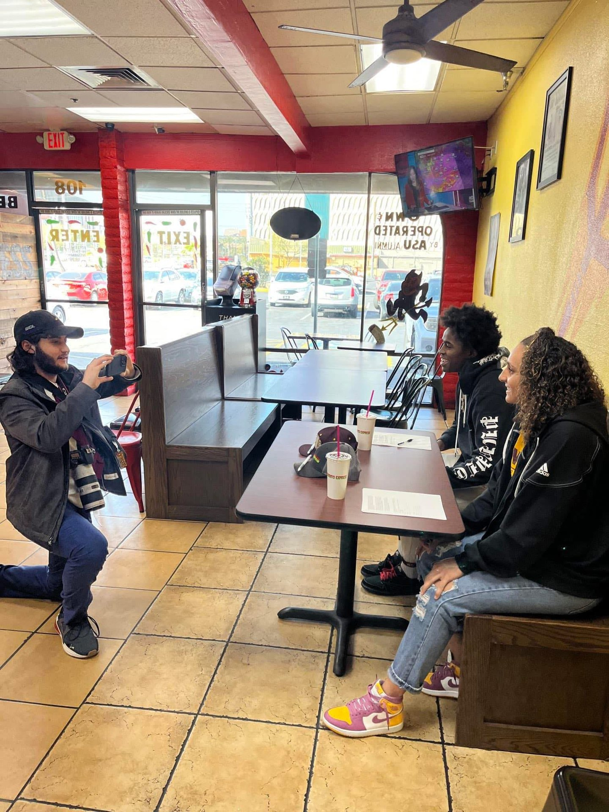

Alpha Epsilon Pi, ASU
Recruitment content and a social presence built to grow a chapter. Video that earns a follow and shows up when it counts, during rush.

Alpha Epsilon Pi at Arizona State competes for attention in one of the largest Greek communities in the country. Recruitment turns on how a chapter presents itself, on campus and online, and the chapter wanted its content to match the experience it offers members.
Rush is won on first impressions. A thin or inconsistent feed makes a chapter look like every other option to a potential new member scrolling before bid day. The chapter needed content that stood out, a reason to follow, and a steady presence between recruitment cycles instead of a scramble every fall and spring.
Rush and recruitment video
Produced recruitment videos made for rush: the brotherhood, the events, and the day to day a flyer cannot show. Short, high-energy pieces built to be shared by members and to land with the people deciding where to go.
Content the feed can run on
Shot member profiles and event recaps that give the page a reason to exist year round, not just during recruitment, so the chapter holds its momentum between cycles.
A consistent brand
Kept a steady posting rhythm and a consistent look, so the chapter shows up the same way every time a recruit checks the page.
The chapter's Instagram grew from 431 followers to 3,687 and counting, an audience that now works for recruitment instead of starting from zero each cycle. The content gave the chapter a presence that stands out in a crowded Greek community and gives potential new members a reason to pay attention long before they walk through the door.

Recruiting a new class? Content is how they find you.